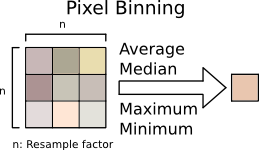

Image rescaling by integer factors. [more]
Categories: Geometry
Keywords: binning, resample, resize, integer resample
[hide]
[hide]
The IntegerResample process is a basic geometry tool that allows resizing an image by an integer resampling factor. Downsampling is applied by using average, median, maximum or minimum pixel binning operations, and upsampling is a nondestructive process that performs a simple pixel replication without any interpolation. The tool can also modify the target image's resolution in pixels per inch or pixels per centimeter.
For arbitrary image resizing using pixel interpolation algorithms, refer to the Resample tool.
[hide]
The first element in the IntegerResample interface is the view selector, which can be used to copy geometrical properties from an image to the Dimensions section of the interface. Selecting a view is optional and has no effect at all on the selected view. Changes can be applied to the active view by clicking the Apply button (or by pressing F5), or by direct application of an instance of the process to a view, as part of the usual procedures to execute a process in PixInsight.
Figure 1
The left picture above shows the default Dimensions section. In the right image the Dimensions section has acquired the geometrical properties of the image specified by the view selector. Note the disabled Original px Width and Heigth edit boxes. When a view is selected, both fields are no longer modifiable since the Original px dimensions correspond to those of the selected view.
This section allows you to downsample or upsample a target image by an integer resample factor. Downsampling is done by a process known as pixel binning, and upsampling is achieved by pixel replication. For arbitrary image resizing using pixel interpolation algorithms, please refer to the Resample tool.
Resample Factor
Use this parameter to specify the integer upsampling or downsampling factor. The original image dimensions are multiplied by this value when using the Upsample option, and by its inverse when the Downsample mode is active.
Downsample mode
When the downsample mode is selected, the target image is rescaled by pixel binning.
Figure 2
Pixel binning refers to the combination of an n×n pixel matrix from an original image to create a single pixel in the target image. The original image is scanned horizontally and vertically applying this technique to generate each pixel in the output image. The combination of source pixels can be done using several mathematical operations, as explained below. Binning increases the signal to noise ratio at the cost of reducing the sampling density, and therefore the spatial resolution.
These are the available pixel binning modes:
Average
Each output pixel is the average value of the corresponding n×n pixel matrix from the original image. Average binning is a linear operation that acts like a low-pass convolution filter.
Median
Each output pixel is the median value of the corresponding n×n pixel matrix from the original image. To compute the median, the n×n original values are sorted and the central element in the sorted list (at index (n × n)/2) is taken as the output value. Median binning is a nonlinear operation that acts in a similar way to a morphological median filter.
Maximum
Each output pixel is the maximum value of the corresponding n×n pixel matrix from the original image. To compute the maximum, the n×n original values are sorted and the last element in the sorted list (at index n×n-1) is taken as the output value. Images downsampled using this operation are always brighter than the original. Maximum binning is a nonlinear operation that acts in a similar way to a dilation morphological filter.
Minimum
Each output pixel is the minimum value of the corresponding n×n pixel matrix from the original image. To compute the minimum, the n×n original values are sorted and the first element in the sorted list (at index 0) is taken as the output value. Images downsampled using this operation are always darker than the original. Minimum binning is a nonlinear operation that acts in a similar way to an erosion morphological filter.
Upsample
In this mode the input image is rescaled by a simple pixel replication process, without any interpolation.
Unlike other modules such as Crop or Resample, this section of the IntegerResample tool is only an informative area, as far as the output size is calculated from the downsampling or upsampling ratio specified in the Integer resample section.
This section shows the size in pixels of the original image on the Original px column, and gives the size of the output image either in pixels (Target px), centimeters and inches. The values in the cm and inch columns depend on the resolution of the image, which can be changed in the Resolution section. The text area below the edit fields provides an estimate of the final memory size of the resulting image.
When a view is selected in the view selector combo box, this section acquires its dimensions and uses them as the Original px width and height values, which cannot be modified in this case, and computes the output memory size based on these dimensions and on the pixel data type of the image. When no view is selected, the input width and height can be changed arbitrarily (a default size of 1000×1000 pixels is used the first time IntegerResample is launched) and a 32-bit pixel format is considered for calculation of the output size.
The resolution of an image is used to specify its final dimensions, in inches or centimeters, when the image is to be printed. The resolution is relevant when the image is imported in a page layout application, such as a word processor or a desktop edition application. It is important to point out that changing the resolution of an image does not change its dimensions in pixels. It is just the dimensions of a printed pixel what image resolution specifies. A default resolution of 72x72 pixels/inch is predefined.
Horizontal and Vertical
The user can specify the horizontal and vertical resolution either in centimeters or inches. The physical width and heigth of the pinted image depend on the resolution and the dimensions in pixels; for instance, a 1000x1000 pixels image with a resolution of 100 pixels per inch in both axes would be printed over a square of 10x10 inches.
Force resolution
When this checkbox is checked the resolution of the target image is effectively modified when the process is executed. Otherwise, when this chekbox is unchecked, resolution values are used for informative purposes exclusively, but they won't change the current resolution of the target image. In both cases, the specified horizontal and vertical resolutions are used to calculate the cm and inch fields of the Dimensions section.
In the following examples we have downsampled the original image by a factor of 3 with the IntegerResample tool, using the different binning operations available. For better evaluation of the results, we have upsampled 3:1 the downsampled results.
Figure 4
Original image, actual size.
Downsample mode = Average
Downsample mode = Median
Downsample mode = Maximum
Downsample mode = Minimum
The maximum binning mode tends to remove dark image structures. The minimum mode has the opposite effect: dark image features are made darker and larger, while bright features are diminished. Median binning is half way between the minimum and maximum operators and can be used to preserve high-contrast structures in the downsampled (binned) image, although it tends to wipe out small-scale structures. Average binning acts like a low-pass filtering process, providing a smooth result.
In this example we have taken a small crop of 200×200 pixels from the original image, which we have upsampled 4:1 with the IntegerResample tool. For comparison, we have included also an upsampled image using the Catmull-Rom cubic spline filter interpolation algorithm.
Figure 5
Original crop, actual size.
Upsampled 4:1 with IntegerResample.
Upsampled 4:1 with the Resample tool using Catmull-Rom cubic spline filter interpolation.
Copyright © 2011 Pleiades Astrophoto. All Rights Reserved.